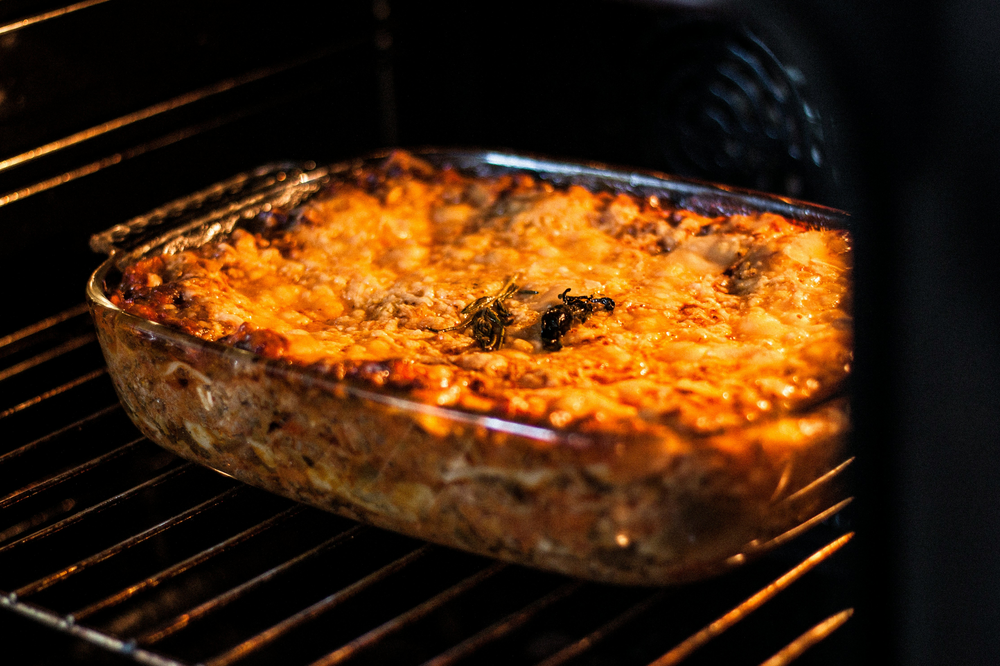

Dinner Is On Me

Spaghetti carbonara
Ingredients
- 100g pancetta
- 50g pecorino cheese
- 50g parmesan
- 3 large eggs
Read more
- 350g spaghetti
- 2 plump garlic cloves
- 50g unsalted butter
- sea salt and freshly ground black pepper
Method
- 1. Put a large saucepan of water on to boil.
Read more
- 2. Finely chop the 100g pancetta, having first removed any rind. Finely grate 50g pecorino cheese and 50g parmesan and mix them together.
- 3. Beat the 3 large eggs in a medium bowl and season with a little freshly grated black pepper. Set everything aside.
- 4. Add 1 tsp salt to the boiling water, add 350g spaghetti and when the water comes back to the boil, cook at a constant simmer, covered, for 10 minutes.
- 5. Squash 2 peeled plump garlic cloves with the blade of a knife, just to bruise it.
- 6. While the spaghetti is cooking, fry the pancetta with the garlic. Drop 50g unsalted butter into a large frying pan or wok and, as soon as the butter has melted, tip in the pancetta and garlic.
- 7. Leave to cook on a medium heat for about 5 minutes, stirring often, until the pancetta is golden and crisp. The garlic has now imparted its flavour, so take it out with a slotted spoon and discard.
- 8. Keep the heat under the pancetta on low. When the pasta is ready, lift it from the water with a pasta fork or tongs and put it in the frying pan with the pancetta. Dont worry if a little water drops in the pan as well and dont throw the pasta water away .
- 9. Mix most of the cheese in with the eggs, keeping a small handful back for sprinkling over later.
- 10. Take the pan of spaghetti and pancetta off the heat. Now quickly pour in the eggs and cheese. Using the tongs or a long fork, lift up the spaghetti so it mixes easily with the egg mixture, which thickens but doesnt scramble, and everything is coated.
- 11. Add extra pasta cooking water to keep it saucy. Season with a little salt, if needed.
- 12. Use a fork to twist the pasta on to the serving plate or bowl. Serve immediately with a little sprinkling of the remaining cheese and a grating of black pepper.

Lasagna
Ingredients
- 3 tbsp olive oil
- 1 onion, finely chopped
- 1 carrot (about 100g), finely chopped
- 3 garlic cloves
Read more
- 140g cubetti di pancetta
- 500g beef mince
- 200ml milk
- 2 x 400g cans chopped tomatoes
- 2 bay leaves
- 2 thyme sprigs
- 2 beef stock cubes
- 2 tsp dried oregano
- 500ml red wine
Method
- 1. First, make the béchamel sauce. Put the milk, onion, bay leaves and cloves into a large saucepan and bring very gently just up to the boil. Turn off the heat and set aside for 1 hr to infuse.
Read more
- 2. For the meat sauce, put the oil, onion, carrot, garlic and pancetta in another large saucepan. Gently cook together until the veg is soft but not coloured.
- 3. Tip in the beef and pork mince, the milk and chopped tomatoes. Using a wooden spoon, stir together and break up and mash the lumps of mince against the sides of the pan. When the mince is mostly broken down, stir in all the herbs, the stock cubes and the red wine, and bring to a simmer. Cover and cook for 1 hr, stirring occasionally to stop the bottom catching.
- 4. Uncover and gently simmer for another 30 mins-1 hr until the meat is tender and saucy. Taste and season.
- 5. To finish the béchamel sauce, strain the milk through a fine sieve into one or two jugs. Melt the butter in the same pan then, using a wooden spoon, mix in the flour and cook for 2 mins.
- 6. Stir in the strained milk, a little at a time the mix will thicken at first to a doughy paste, but keep going, adding milk gradually to avoid lumps. Bring to a gentle simmer, stirring constantly (if you have lumps, give it a quick whisk). Gently bubble for a few minutes until thickened. Season with salt, pepper and a good grating of nutmeg.
- 7. Heat the oven to 180C/160C fan/gas 4. Spread a spoonful of the meat sauce over the base of a roughly 3.5-litre baking dish. Cover with a single layer of dried pasta sheets, snapping them to fit if needed, then top with a quarter of the béchamel. Spoon over a third of the meat sauce and scatter over a little of the parmesan.
- 8. Repeat the layers pasta, bechamel, meat and parmesan two more times to use all the meat sauce. Add a final layer of pasta, the last of the bechamel and remaining parmesan. Sit the dish on a baking tray to catch spills and bake for 1 hr until bubbling, browned and crisp on top.

Pasta Bake
Ingredients
- 4 tbsp olive oil
- 1 onions
- 2 garlic cloves
- 2 x 400g cans chopped tomatoes
Read more
- 1 tsp caster sugar
- 6 tbsp mascarpone
- 4 skinless chicken breasts, sliced into strips
- 300g penne
- 70g mature cheddar, grated
- 50g grated mozzarella
Method
- 1. the oil in a pan over a medium heat and fry the onion for 10-12 mins. Add the garlic and chilli flakes and cook for 1 min. Put in the tomatoes and sugar and season to taste. Simmer uncovered for 20 mins or until thickened, then stir through the mascarpone.
Read more
- 2. Heat 1 tbsp of oil in a frying pan. Season the chicken and fry for 5-7 mins or until the chicken is cooked through.
- Heat the oven to 220C/200C fan/gas 7. Cook the penne following pack instructions. Drain and toss with the remaining oil. Tip the pasta into a medium sized ovenproof dish. Stir in the chicken and pour over the sauce. Top with the cheddar, mozzarella and parsley. Bake for 20 mins or until golden brown and bubbling.

Beef stew
Ingredients
- 1kg stewing beef, cut into large chunks
- 2 onions, chopped
- 800g (2 cans) chopped tomatoes
- 2 tsp each sweet paprika, ground cumin and mild chilli powder
Read more
- 2 tbsp red or white wine vinegar
- 2 tbsp caster sugar
- 400g can butter beans, rinsed and drained
Method
- 1. Heat oven to 160C/ 140C fan/gas 3. Mix the beef, onions, tomatoes, spices, vinegar and sugar in a casserole dish. Cover and bake for 2½ hrs.
Read more
- 2. Stir in the beans and bake for 30 mins more (with the lid off if the casserole is a little wet or lid on if good consistency), until the beef is tender.
- 3. Cool, then freeze in 6-8 portions in small food bags or plastic containers. Defrost in microwave or overnight in fridge, then heat in the morning and transfer to a thermos container, or heat in the microwave at lunchtime.
- 4. serve with rice or any prefered option.

Chicken, Potatoes Roast
Ingredients
- 50g unsalted butter
- 1 large garlic clove
- 1.65 kg - 1.8 kg whole chicken
- 1 lemon
Read more
- 800g red-skinned potatoes, peeled and cut into chunks
- 1 tbsp olive oil
Method
- 1. Heat the oven to 200C/180C. Mix the butter and garlic.
Read more
- 2. Carefully lift the skin of the chicken breasts and legs, and push about two-thirds of the garlic butter under the skin. Spread it over the meat, then spread the remaining butter over the skin and season. Put the chicken in a large roasting tin and squeeze over the lemon halves, then put them into the cavity along with the dill stalks. Roast the chicken for 20 mins.
- 3. Reduce the oven to 180C/160C
- 4. Scatter the potatoes around the chicken, drizzle over the oil and sprinkle with a little salt. Turn the potatoes so they’re coated in the oil and any roasting juices from the chicken. Roast for another 1 hr, turning the potatoes occasionally until brown and the chicken is completely cooked through. Sprinkle over the reserved dill leaves and serve.